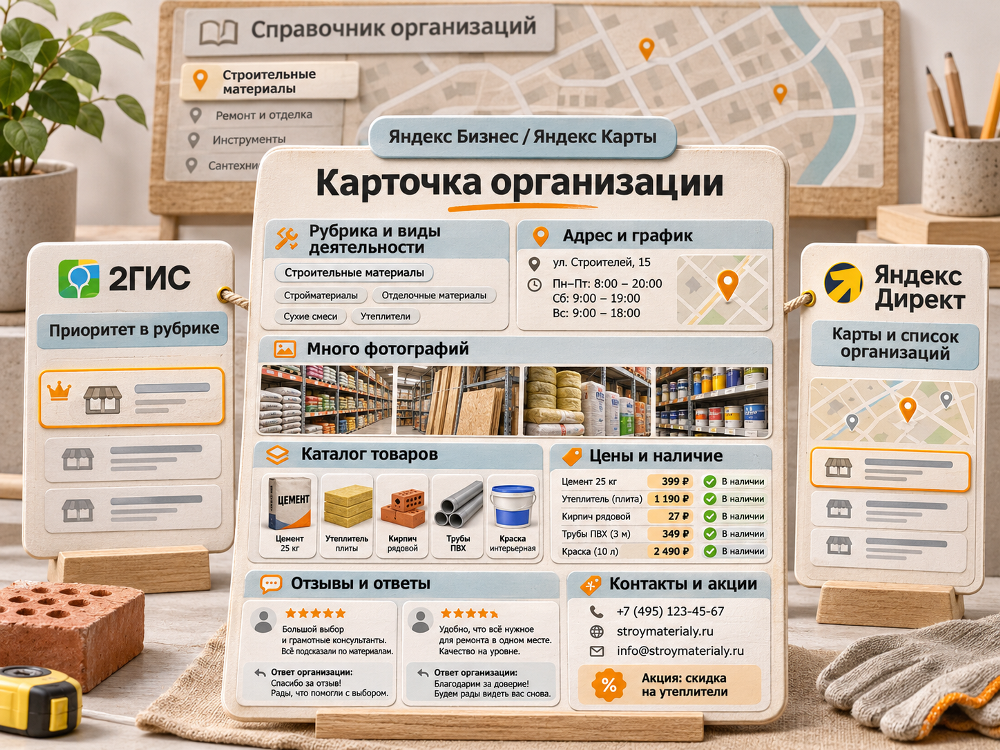
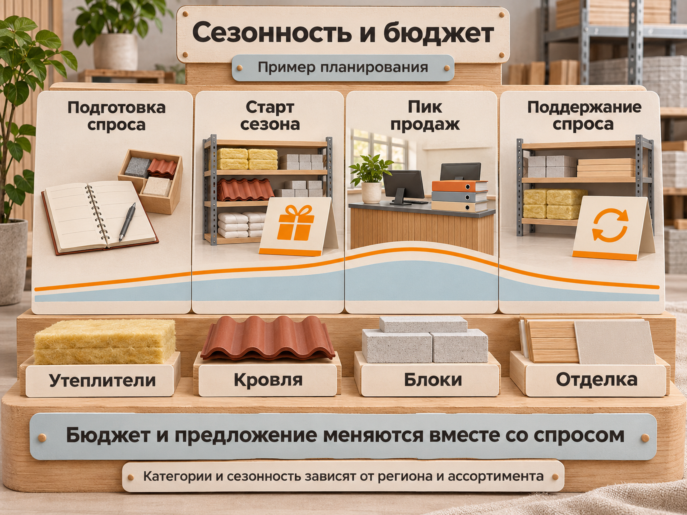

Блог о платном трафике
Реклама строительного магазина: продвижение магазина и строительных материалов
Реклама строительного магазина должна приводить не только посетителей сайта, но и покупателей в торговую точку. Поэтому первым каналом для магазина с физическим адресом становятся геосервисы: 2ГИС, Яндекс Бизнес и Яндекс Карты. Там человек уже ищет, где купить краску, сухие смеси, инструмент или отделочные материалы рядом.
Для запроса «реклама строительных материалов» нужна вторая часть системы: отдельные товарные и категорийные предложения, страницы с ценами и наличием, Яндекс Директ, Авито и понятный способ быстро получить расчёт. В этой статье магазин остаётся главной темой, а продвижение строительных материалов разобрано как отдельный кластер спроса.
Главный принцип: сначала сделать магазин убедительным в геосервисах, затем вести на него платный трафик и считать не только заявку, но и оплаченную продажу.
Сначала разделите две задачи рекламы
У строительного магазина обычно есть два разных типа спроса. Их можно вести в одной рекламной системе, но нельзя смешивать в одной посадочной странице и одной цели.
| Задача | Что ищет покупатель | Что должно быть в предложении |
|---|---|---|
| Реклама строительного магазина | Магазин рядом, самовывоз, доставка сегодня, консультация | Адрес, маршрут, график, телефон, наличие, условия доставки и самовывоза |
| Реклама строительных материалов | Конкретный товар, категория, цена, объём, бренд | Категория или карточка товара, цена, остаток, характеристики, срок доставки и расчёт количества |
Если человек ищет магазин, ему не нужно сначала читать длинную статью о преимуществах бренда. Если он ищет утеплитель или плиточный клей, ему важнее увидеть ассортимент, цену и возможность забрать товар. Разные намерения требуют разных объявлений и страниц.
Геосервисы: основа рекламы строительного магазина
Карточка организации в геосервисах часто оказывается ближе к покупке, чем рекламный сайт. Пользователь уже выбрал район или товарную категорию и сравнивает несколько магазинов по расстоянию, рейтингу, фотографиям, отзывам и условиям получения заказа.
В Яндекс Бизнесе и Яндекс Картах это одна карточка организации. Её нужно заполнять как самостоятельную витрину магазина, а не как короткую ссылку на сайт. Подробный разбор принципов есть в статье о рекламе в Яндекс Картах.
Что обязательно заполнить в карточке организации
В карточке должны быть:
- точное название и основная рубрика без набора лишних ключевых слов;
- адрес, вход, часы работы, телефон и способы связи;
- фотографии фасада, входа, торгового зала, склада, зоны погрузки и популярных категорий;
- каталог товаров и услуг с названиями, фотографиями, ценами и короткими описаниями;
- информация о доставке, самовывозе, оплате, подъезде и погрузке;
- ссылки на сайт, мессенджер или форму заказа, если они действительно обрабатываются;
- ответы на вопросы и регулярная работа с отзывами;
- сезонные предложения и актуальные сообщения о наличии.
Для строительного магазина особенно важен каталог внутри карточки организации. В нём должны быть не только общие слова «стройматериалы», но и конкретные группы: сухие смеси, утеплитель, гипсокартон, краска, крепёж, инструмент, кровельные и отделочные материалы. Цены не должны противоречить сайту и торговому залу.
Зачем нужно приоритетное размещение
Органическое присутствие в геосервисе полезно, но в конкурентной рубрике магазин может оказаться ниже компаний, которые купили приоритет. В 2ГИС для этого используется приоритетное размещение в рубрике. В Яндекс Картах можно подключать продвижение карточки через Яндекс Директ и показываться в поиске по карте, списке организаций и блоках организаций.
По данным 2ГИС, в историческом исследовании за февраль 2021 года 64% переходов приходилось на первые пять компаний рубрики. Это не текущая гарантия результата, а старый ориентир, который показывает ценность заметного положения в списке.
Как использовать Яндекс Директ для геосервисов
Яндекс Директ нужен здесь как дополнительный слой продвижения, а не как замена заполненной карточке. В кампании стоит отдельно проверить продвижение организации в Картах и список организаций с галереей услуг. В объявлениях и карточке должны совпадать рубрика, адрес, ассортимент и целевое действие.
Если карточка пустая, платное размещение только увеличит количество дорогих переходов на слабое представление магазина. Сначала нужно подготовить фотографии, каталог и ответы на частые вопросы, затем включать приоритет и Директ.

Реклама строительных материалов: как разделить ассортимент
Продвигать все товары одним объявлением нельзя. У цемента, ламината, утеплителя и инструмента разные запросы, сезонность, маржинальность и путь к покупке.
Минимальная структура рекламных групп:
- товарные категории с устойчивым спросом;
- бренды и конкретные модели, если их ищут отдельно;
- срочный локальный спрос с самовывозом;
- доставка материалов на объект;
- оптовые и B2B-запросы;
- сезонные направления, например утепление, кровля или дачные работы.
Для каждой группы нужно заранее определить страницу, цену, наличие, минимальный заказ, срок отгрузки и целевое действие. Для большого каталога полезны товарный фид и отдельные страницы категорий. Для небольшого магазина лучше начать с десяти или двадцати наиболее прибыльных направлений, чем вести трафик на общий раздел без цен и остатков.
Приоритет рекламного бюджета следует отдавать не товарам с самым большим количеством показов, а позициям, где сходятся спрос, маржа и наличие. Дешёвый клик на товар, которого нет на складе, не является результатом рекламы.
Сезонность и распределение бюджета
У магазина не бывает одинакового спроса круглый год. Весной и летом растёт интерес к дачным работам, благоустройству, кровле и наружным материалам. Осенью и зимой меняется структура спроса: часть покупателей переключается на утепление, ремонт внутри помещений и закупки для профессиональных объектов.
Поэтому бюджет нужно распределять не только по каналам, но и по периодам. До сезонного пика стоит заранее собрать ассортимент, обновить цены и подготовить отдельные объявления. В период высокого спроса полезно увеличивать показы только там, где подтверждены наличие, маржа и скорость отгрузки.

Какой сайт лучше продаёт магазин и материалы
Формат сайта выбирают по длине выбора и количеству товаров, а не по моде. Одному магазину нужен каталог с остатками, другому достаточно посадочной страницы на отдельную категорию, а сложный подбор утеплителя может лучше начинаться с короткого квиза.
| Формат | Когда использовать | Главная конверсия |
|---|---|---|
| Интернет-магазин или каталог | Много SKU, понятные цены, регулярные заказы и доставка | Заказ, звонок, добавление в корзину |
| Посадочная страница категории | Нужно быстро проверить одно направление или сезонное предложение | Звонок, заявка на расчёт, заказ доставки |
| Квиз | Покупателю нужна помощь с количеством, совместимостью или комплектацией | Получение параметров и расчёт комплекта |
Квиз не должен заменять каталог, если человек уже знает нужный товар. Он полезен для задач «рассчитать утепление», «подобрать сухую смесь» или «собрать комплект для ремонта». Для простого товара лишние вопросы только увеличивают путь до покупки.
На любой посадочной странице должны быть видны регион, цена или понятный способ её получить, наличие, сроки доставки, самовывоз, телефон и фотографии реального магазина. Отдельно покажите, что происходит после заявки: кто перезвонит, когда будет расчёт и можно ли забрать заказ самостоятельно.
Авито для строительного магазина
Авито полезен там, где покупатель сравнивает предложения по цене, наличию и близости к объекту. Для магазина это не только канал отдельных объявлений, но и витрина категорий с постоянным обновлением.
Сначала нужно привести в порядок профиль и объявления: единые фотографии, точные характеристики, актуальная цена, город, условия доставки, самовывоз и быстрый ответ в чате. Отдельные объявления стоит делать для групп товаров, которые имеют собственный спрос. Объявление «все стройматериалы» обычно проигрывает странице с конкретным предложением.
Платное продвижение объявления и встроенная Авито Реклама решают разные задачи. Первое помогает поднять конкретную публикацию в выдаче. Второе позволяет масштабировать показы и управлять продвижением аудитории и объявлений. Перед запуском нужно договориться, что считается результатом: просмотр, сообщение, звонок, расчёт или оплаченный заказ. Подробная настройка канала разобрана в статье о настройке Авито Рекламы.
Что показывают опубликованные кейсы
Ниже собраны открытые кейсы, опубликованные в течение последних двух лет. Это примеры отдельных проектов, а не средние показатели рынка.
| Канал и проект | Опубликованные данные | Моя проверка или расчёт |
|---|---|---|
| Яндекс Директ, «Первая Строительная База» | За период с мая 2024 года по май 2025 года указаны 126 645 кликов со средней ценой 36,7 ₽, 2693 лида за год и до 210 лидов в месяц. Стоимость привлечения снизилась на 40%. | Расход по кликам составляет примерно 4 647 872 ₽. Если сопоставить его с 2693 лидами, получается около 1725 ₽ за лид. Это расчёт по раскрытым данным, а не заявленный в кейсе CPL и не расчёт прибыли. |
| Яндекс Директ, ТЕХНОНИКОЛЬ | После передачи офлайн-конверсий из 1С в Метрику и Директ стали видны дополнительные заказы: до этого в электронной торговле фиксировалось 52% заказов, ещё 48% находились вне этой статистики. Выручка из Директа выросла в 2,5 раза по сравнению с периодом без оптимизации по офлайн-конверсиям. | Бюджет и стоимость продажи не раскрыты, поэтому этот кейс нельзя использовать как ориентир CPL или CAC. Он показывает ценность передачи фактических продаж в рекламную систему. |
| Авито, строительные материалы и услуги | В опубликованном агентском кейсе за продвижение потратили около 13 000 ₽ и получили более 50 целевых обращений. Указаны тариф 4000 ₽ в месяц и дополнительное продвижение объявлений. | 13 000 ₽ делятся на 50 обращений как не более 260 ₽ за обращение. Это верхняя оценка по формулировке «более 50», а не точная стоимость лида. |
| Авито, кровельные материалы | В другом открытом кейсе за два месяца обращения выросли с 5 до 26 в день, просмотры профиля увеличились в пять раз, конверсия контакта выросла с 1,5 до 3,34%, а стоимость контакта снизилась с 295 до 100 ₽. | Результат показывает эффект упаковки профиля и продвижения, но не сообщает прибыль магазина и не является рыночной нормой для любого региона. |
Кейсы нужно сравнивать только после проверки определения лида. В одном проекте лидом называют любое сообщение, в другом - квалифицированный запрос, а в третьем - подтверждённый заказ. Поэтому для строительного магазина важнее связать рекламу с продажей, чем выбрать канал по самой низкой цене обращения.
Прогноз бюджета, продаж и прибыли
Прогноз нужно строить от экономики магазина. Для первого расчёта достаточно пяти показателей:
- рекламный бюджет;
- стоимость обращения;
- доля обращений, которые становятся продажами;
- средний заказ;
- валовая маржа.
Базовые формулы простые:
- лиды = рекламный бюджет / стоимость лида;
- продажи = лиды × конверсия лида в продажу;
- CAC = рекламный бюджет / число продаж;
- валовая прибыль с заказа = средний заказ × маржа;
- остаток после рекламы = валовая прибыль с продаж - рекламный бюджет.
Три сценария для первого расчёта
Ниже приведён прогноз для магазина со средним заказом 80 000 ₽ и валовой маржой 25%. В расчёте не учтены зарплаты, аренда, налоги, логистика, скидки и возвраты.
| Сценарий | Бюджет | CPL | Лиды | Лид в продажу | Продажи | CAC | Валовая прибыль с продаж | После рекламы |
|---|---|---|---|---|---|---|---|---|
| Осторожный | 100 000 ₽ | 2500 ₽ | 40 | 10% | 4 | 25 000 ₽ | 80 000 ₽ | -20 000 ₽ |
| Рабочий | 150 000 ₽ | 2000 ₽ | 75 | 20% | 15 | 10 000 ₽ | 300 000 ₽ | 150 000 ₽ |
| Сильный | 250 000 ₽ | 1800 ₽ | 139 | 25% | 35 | примерно 7143 ₽ | 700 000 ₽ | 450 000 ₽ |
Рабочий сценарий из таблицы означает 75 обращений, 15 продаж и CAC 10 000 ₽. При валовой прибыли 20 000 ₽ с заказа после рекламных расходов остаётся 10 000 ₽ на продажу до остальных расходов бизнеса. Если фактическая маржа ниже, такой же CPL может перестать быть приемлемым.
Не переносите этот прогноз в план продаж без проверки собственной статистики. Сначала запустите ограниченный тест, затем замените предположения фактическими значениями по квалифицированным обращениям и оплатам.
Как считать качество рекламы, а не только заявки
Для магазина недостаточно цели «отправлена форма». Нужно разделять хотя бы такие события:
- звонок или сообщение;
- запрос цены или наличия;
- сформированный заказ;
- оплаченный заказ;
- повторная покупка.
Данные из CRM, кассы или 1С нужно передавать в Метрику и Яндекс Директ с источником, кампанией и объявлением. Тогда система сможет отличать случайный вопрос от продажи и искать больше похожих покупателей. Подробнее о логике есть в статье об офлайн-конверсиях в Яндекс Директе.
Отдельно проверяйте продажи из геосервисов. Часть покупателей позвонит по номеру в карточке, проложит маршрут и придёт в магазин без посещения сайта. Это не повод считать карты непрозрачным каналом: нужны промокод, вопрос на кассе, отметка источника в CRM и регулярное сравнение динамики.
Частые ошибки
- продвигать пустую карточку организации без фотографий и каталога;
- вести весь трафик на главную страницу без цен, остатков и условий доставки;
- объединять в одной кампании магазин, опт, доставку и разные товарные категории;
- считать сообщением продажу и не проверять оплату;
- публиковать объявления на Авито без обновления цены и наличия;
- оценивать канал по одному удачному дню;
- увеличивать бюджет до того, как понятна маржа и допустимый CAC;
- оставлять неотвеченные отзывы и вопросы без реакции.
Пошаговый запуск рекламы
- Определите радиус магазина, ключевые товарные категории, средний заказ и маржу.
- Заполните одну карточку организации в Яндекс Бизнесе и Яндекс Картах, добавьте каталог, цены, фотографии и условия получения.
- Подключите приоритетное размещение в 2ГИС и проверьте продвижение организации в Яндекс Директе.
- Подготовьте отдельные страницы для основных категорий и товаров, которые есть в наличии.
- Запустите Поиск и рекламу в Картах по разным группам спроса, а не одной общей кампанией.
- Разместите на Авито отдельные объявления по приоритетным категориям, затем протестируйте встроенную Авито Рекламу.
- Настройте цели, UTM-метки, коллтрекинг и передачу оплаченных заказов из CRM или 1С.
- Через первый месяц сравните каналы по продажам, CAC и валовой прибыли, после чего перераспределите бюджет.
Итог
Реклама строительного магазина начинается не с увеличения бюджета, а с качественной карточки организации. В Яндекс Бизнесе и Яндекс Картах нужно показать реальный магазин, ассортимент, цены, наличие и условия получения. В 2ГИС имеет смысл отдельно проверить приоритетное размещение в рубрике.
Реклама строительных материалов требует другой структуры: категории, товары, страницы с характеристиками и отдельные предложения по доставке или самовывозу. Яндекс Директ, Авито и сайт работают сильнее, когда связаны с остатками и фактическими продажами.
Для первого прогноза можно считать бюджет от CPL и конверсии лида в продажу, но прибыль проверяется только через маржу, CAC и оплаченный заказ. Именно поэтому лучший тест для магазина - это не максимальное число заявок, а понятная связь между рекламным расходом и валовой прибылью.